ReSID：让长尾物品的语义信号走完生成式召回链路
论文链接：arXiv:2611.16404。首次提交：2026 年 11 月 12 日 07:12 UTC；笔记日期：2026 年 11 月 16 日。作者为 Muyu Zou、Shunye Tang、Yi Xu、Haibo Xing、Yandong Wang、Lingyu Mu、Jinxin Hu。一作机构为阿里巴巴国际数字商业集团，合作机构包括南开大学。主类别：推荐算法。作者公开的 ReSID 代码仓库 已核验可访问，包含源码、准备好的公开数据输入、冻结权重和数值参考；本笔记没有重新训练或独立复现指标。
ReSID 把长尾问题从“如何把物品学好”向后推进到“学到的信号能否真正变成候选”。它连接离线并行量化、在线引导搜索和局部编码匹配，最值得细读的是三段链路之间的约束，而不是把局部匹配单独当成一项召回技巧。
现有长尾生成式推荐往往分别改进训练目标或物品编码，却仍使用标准 beam search 和完整 SID 精确匹配；长尾物品即使保留了有用语义，也可能因早期前缀被剪掉或少数位置预测错误而无法被召回。
1. 背景和问题
1.1 长尾表示学到了，物品仍可能出不来
生成式推荐先将物品内容表示离散化，得到由多个 token 组成的语义标识，再根据用户历史生成标识序列。用户历史不是直接与全库每个物品逐一计算最终召回分数，而是先影响每一步的 token 条件概率，搜索器再保留少量高分前缀，最终把完整编码映射回物品。这个接口节省了直接遍历大规模物品库的成本，也引入了过去向量检索中不完全相同的失败方式：一个物品不是只需要相似度较高，而是必须有一条能够完整走通的离散路径。当某个位置的概率较低时，完整物品路径可能提前消失，即使它在其他语义维度上都很契合用户，也无法被最终的精确编码匹配找到。
训练交互中的头尾分布会放大这个限制。热门物品得到大量监督，相关 token 转移和前缀往往拥有更高概率；长尾物品监督较少，在窄搜索预算下很容易被热门前缀挤出。只增加 beam 宽度确实可以保留更多路径，但会增加逐步解码、缓存和候选匹配的成本。因此本文关心的不是无限计算下能否找到长尾，而是在已经限制搜索预算的部署条件下，怎样减少语义信号沿途丢失。作者将问题拆成编码构建、在线解码、物品匹配三个阶段，避免把检索失败全部归因于模型参数没有充分学习。这里的“可达性”有明确条件：给定已生成的路径和允许的 token 错配数量，目标物品是否仍有机会进入候选集合；它与最终排序截断后的命中率不同。
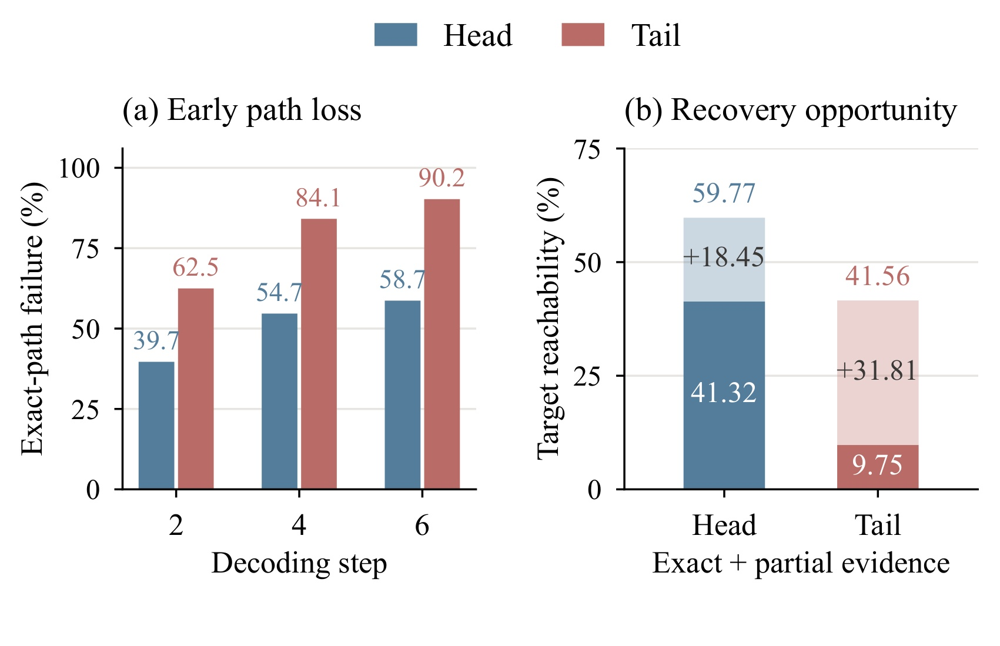
Figure 1 左侧比较 Industrial 数据上头尾目标的完整前缀失效比例，横轴是解码步数，纵轴是目标精确路径已经离开 beam 的比例。第二步长尾已达百分之六十二点五，明显高于头部的百分之三十九点七；到最后一步长尾接近百分之九十。这不是说这些物品都毫无相关语义，而是说完整路径已不可用。右侧把精确命中与额外的局部证据恢复空间区分开：长尾精确可达性只有百分之九点七五，放宽到允许三个位置错配后，可达性可以到百分之四十一点五六，增量比头部更大。浅色区域代表符合容错条件的潜在候选，不能当成实际召回增量，更不能当成线上曝光增长。该图因此支持两个紧密连接的判断：长尾前缀比头部更早丢失，而完整编码失配并不意味着所有位置的信息都已丢失。后续方法需要同时利用残留局部信号，并防止它们在搜索完成前彻底消失。
1.2 三组诊断分别约束编码、匹配和搜索
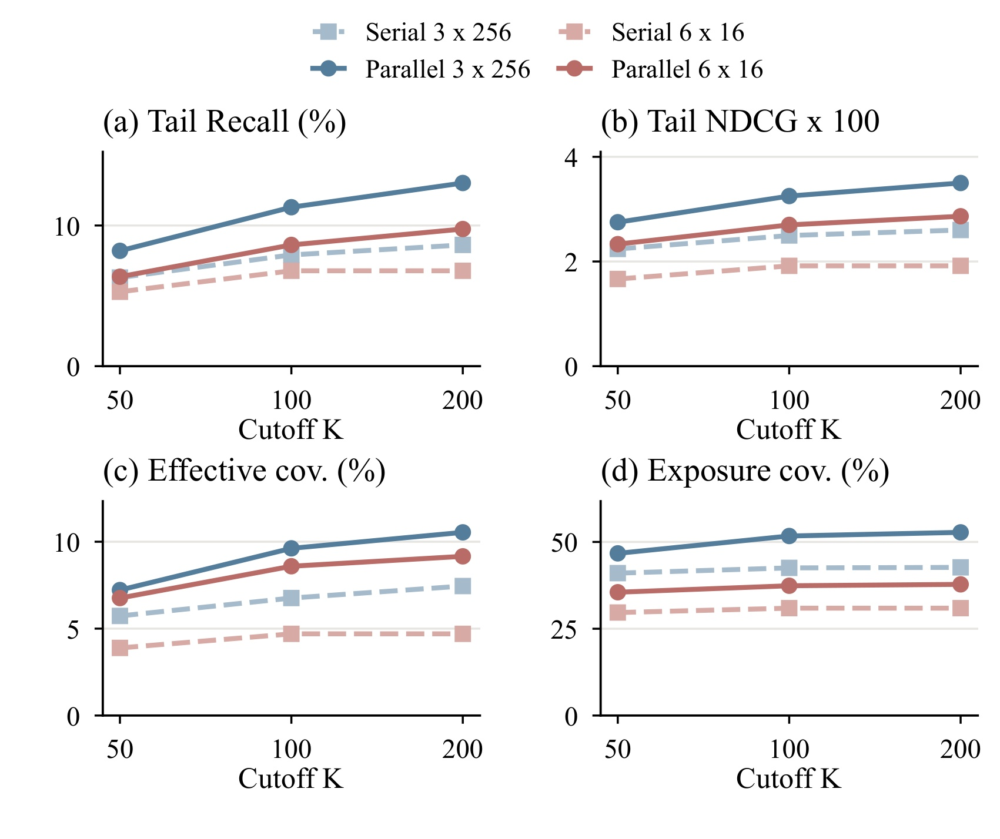
Figure 2 把离线量化方式与在线解码方式区分开。虚线代表串行残差编码，实线代表把潜在向量分为独立子空间后分别量化的并行编码；方块与圆点对应不同编码长度配置。三个每位二百五十六码与六个每位十六码的名义组合空间相同，但不能因此认定信息容量、训练难度或搜索空间已经完全等价。作者在短码和长码内部分别比较串行与并行方案，四个面板依次给出长尾召回、排序质量、有效覆盖和曝光覆盖，横轴为返回条数。并行方式的长尾指标普遍更好，说明减少跨位置残差依赖有价值；短码召回在二百截断处从百分之八点六二提高到百分之十三点零二。六位长码的精确命中仍受严格逐位正确条件限制，表明仅把编码做长并不足以解决召回。图中所谓并行发生在离线 SID 构建阶段，在线推荐器仍按自回归方式生成各位置，不能把它理解成取消了在线解码依赖或实现一次性并行生成。
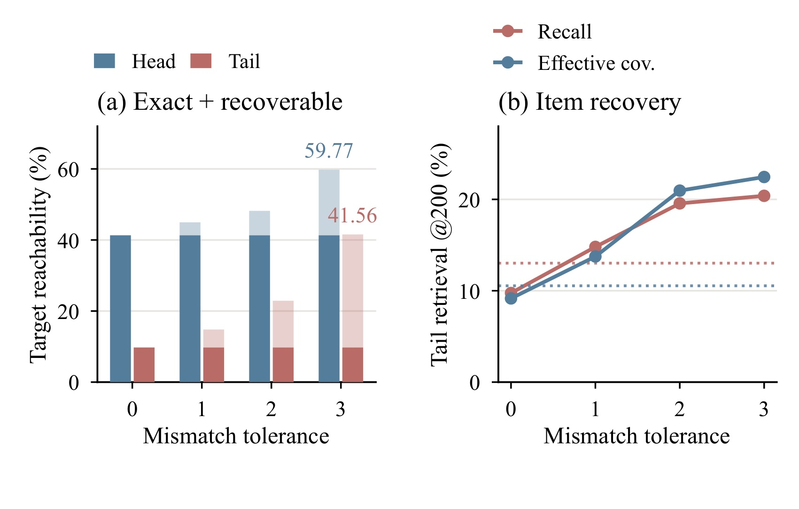
Figure 3 在同一组 beam 上改变错配容忍度，左侧问目标是否处于某条生成序列的容错邻域，右侧问按局部匹配找到候选、再排序截断后到底找回多少正确物品。两者刻意分开，因为容忍度变大会引入更多相关物品，也会引入大量干扰物品。对长尾目标，允许三个位置错配时左图可达性达到百分之四十一点五六；右图实际长尾召回二百约为百分之二十点三九，有效覆盖也明显增加，却没有达到候选可达性上界。这个差距说明“存在局部证据”只是必要机会，候选排序仍然会损失部分目标。图中虚线是较短的三位并行编码加精确匹配，长码配合局部恢复可以跨过该参照，但不能把所有差异都归功于长码。局部匹配还必须坚持同一条生成序列上的逐位置比较，不能从多条互不相关的路径各取若干正确 token 再拼成一个从未生成过的成功证据。这个限制保证恢复仍然能够回指一条实际存活路径。
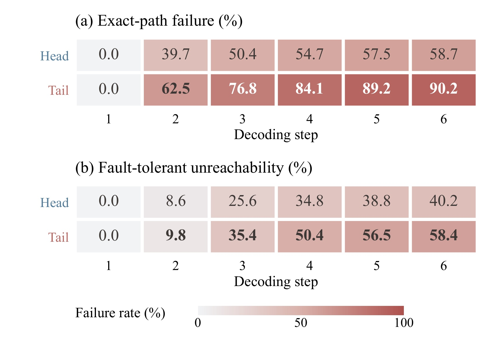
Figure 4 上半部分测量目标精确前缀是否留在 beam，下半部分更宽松，检查是否还存在某条保留前缀，能够延伸为一个合法物品库编码，且与目标编码最多相差三个位置。只要下半部分已经失效，后续再聪明的局部匹配也无法从当前搜索结果里找回目标。长尾在第四步的容错不可达率已超过一半，最后达到约百分之五十八点四；头部的对应比例低得多。上下两幅图之间的差异表明，一部分精确路径虽然已丢失，仍可以通过邻近路径恢复，但这种机会不是永远存在。判断中要求“合法物品库补全”尤其重要：若只在抽象码空间中允许随意补 token，会高估真正有物品承接的恢复空间。这个诊断将改进点推回搜索器：不能只扩大末端匹配容忍度，还需要在早期剪枝时保护与用户相关、但先验热度较低的前缀。图中热力颜色表示失败比例，深色不是模型关注更强，而是目标的存活机会更低。
这三组诊断形成的逻辑是：离线编码应尽量隔离位置错误，末端匹配应利用未损坏位置，上游搜索则必须留下至少一条可恢复的合法路径。本文的贡献因此包含一个阶段间的上界判断。训练侧改善长尾 token 概率，不能自动保证窄 beam 留住它；末端恢复扩大候选集，也不能越过已经被剪空的容错邻域。对实际服务而言，应把目标失效发生在哪一步、目标还剩多少可恢复邻域、恢复后的正确候选能否进入最终截断分别计数，避免只拿最终召回率解释所有原因。
2. 方法
2.1 长并行 SID：让错误停留在局部子空间
物品文本向量先进入多层感知机编码器，再被均分为多个潜在子空间。每个位置有独立码本，只量化自己的子向量，重构时把所选码字拼接，再由解码器恢复原文本向量。作者保留常规重构损失与承诺损失，没有把新意建立在一个特殊推荐主损失上。其离散分配与重构潜变量写成原文公式一：
符号解释：物品编号为 $i$，位置为 $\ell$，位置总数为 $L$；$z_i^{(\ell)}$ 是该物品在对应子空间的连续表示，$e_{\ell,k}$ 是独立码本里的第 $k$ 个向量，$c_{i,\ell}$ 是所选离散 token；连接符表示向量拼接。位置独立的是量化输入与码本，不是物品语义在统计上完全独立。 生成推荐器仍以历史和已生成前缀为条件预测下一 token，通过交叉熵训练，因而可以学习跨位置的统计关系。
串行残差量化每层使用上一层减去码字后的残差，早期码字向热门方向偏移后，会改变后续层看到的输入。附录用两个轨迹的差表示这种传播：
符号解释：$\delta_j$ 是受偏量化器与理想量化器在第 $j$ 层的码字位移，$\Delta r_\ell$ 是残差轨迹差，单位方向 $d$ 指向头部主导区域，$B_\ell$ 衡量沿该方向累积的偏差；下界要求各层位移与此方向对齐，投影至少为非负的 $b_j$。这是一项有条件的误差传播结论，不是对任意训练码本都必然成立的无条件定理。并行量化在固定子空间投影和其他码本不变时，改变某个位置的量化器不会改变其他位置 token，因而隔离这种残差输入链。它保护局部证据，但没有证明所有长尾物品都能被更准确地表示。
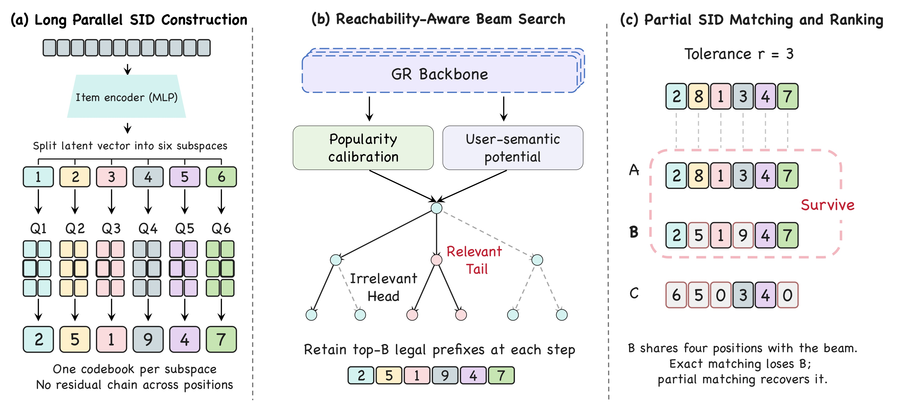
Figure 5 左侧从连续物品表示经过编码器、拆分子空间，再进入六个独立码本，突出没有横跨位置的残差链。中间仍是生成推荐骨干逐步扩展前缀，热门度校准与用户语义势能共同影响每一步留下哪些合法分支；这是搜索决策的修改，并没有为每个长尾物品单独训练一套推荐器。右侧用三条物品编码展示末端恢复：示例目标与某条生成路径有四个相同位置、两个不同位置，在允许三个错配时可被找回，而完整相等条件会直接丢掉它。三个部分按真实服务依赖连接，离线码本给在线生成器规定词表和物品映射，在线搜索提供完整候选路径，末端匹配才把路径转回物品。用户语义对齐新增轻量线性投影，训练它时基础推荐器冻结；热门校准和局部匹配属于推理阶段操作，不增加生成器参数。图示的恢复对象仍需要通过合法物品库映射和最终排序，不能因为存在四个匹配位置就推断它一定被返回，更不能把图中示意的三条物品当作真实实验样本规模。这幅图把保住路径与找回物品明确分开，是理解整个方法为何需要三个阶段的关键。图中语义引导与热门校准作用在剪枝之前，局部恢复发生在完整路径生成之后，二者顺序不能交换。
2.2 可达性感知搜索：先降热门先验，再补用户相关性
推荐器先正常输出下一 token 的 logits，再减去经验转移先验的对数项，最后归一化成概率。这个先验只从训练频次估计，不能使用测试目标出现次数；减去它会降低常见转移的相对优势。若只做热门抑制，窄 beam 也可能填入与用户无关的随机长尾路径，因此作者同时把池化历史编码映射成归一化用户向量，并与归一化物品文本向量进行对齐。用户投影通过目标物品的交叉熵学习，底座保持冻结；它的任务是判断一条前缀所覆盖的合法物品集合，与当前用户的兴趣是否一致。
符号解释：$p$ 为一个合法前缀，$\mathcal I(p)$ 为物品库中共享该前缀的物品集合，$q_u$ 是归一化用户向量，$t_i$ 是归一化物品文本向量，$\tau$ 控制相似度温度。除以集合大小让势能不是简单奖励覆盖物品多的热门前缀；对相似度先取指数再平均，允许相关的后代物品影响前缀分数。此处描述的是精确定义，工业实现为降低代价，用离线预计算的归一化前缀质心与用户做点积近似，不能把两者当成逐请求完全相同的计算。
符号解释：$a_\theta$ 是模型原始输出，$\pi(v\mid p)$ 是训练得到的前缀到下个 token 的经验转移先验，$\lambda$ 是校准强度，$H_u$ 是用户历史。该式将原文对校准概率的文字定义展开，位置先验与整体物品热度不完全等价，复现时需检查稀有转移的平滑及合法词表屏蔽，不能对零频率直接取对数。最终扩展分数保留原概率累加，并加势能差：
符号解释：$S_u$ 是累计搜索分数，$p\Vert v$ 为扩展后的前缀，$\beta$ 为语义引导权重。势能差让每步只记入此次扩展带来的相关性变化，而不是重复加一个静态用户分数；在完整路径上它有望远镜式累加，但 beam 逐步剪枝依旧具有路径依赖，最终分数相似并不保证相同物品都能存活。每步仅保留评分最高的有限条合法前缀，热门校准决定给低先验分支多少机会，语义势能则决定机会给哪位用户相关的物品。
2.3 局部匹配：恢复集合之后仍然需要排序
完整解码后得到有限条长 SID。对每个物品，与其中每条完整路径逐位置比较，只要至少一条路径在给定容忍度内便可入候选；随后优先按错配更少排序，错配相同时依据对应 beam 的分数。这个匹配规则可以用如下等价表达说明：
符号解释：$\mathcal B_u$ 是最终生成路径集合，指示函数对不相同位置计一，$r$ 是允许的最大错配数，$\mathcal C_u$ 是恢复候选集合。该式是原文第三阶段匹配规则的直接数学写法，不是作者额外提出的训练损失。允许三个错配并非允许任意改写路径，而是在固定物品编码库里找邻近物品。实现上使用位置与 token 的倒排列表累积匹配数，避免每个请求把全部物品与所有路径逐个比较。候选排序与去重必须在一致口径下执行：当大量物品落入相同错配桶时，beam 分数打破并列可能影响头尾分布，因而容忍度不是越大越好；上游已经丢尽合法邻域的目标也不会因该式而重新出现。
3. 实验结果
3.1 公开小目录与工业大目录要分开读
公开评测用 Amazon Reviews 的 Industrial 和 Office 两个类别，分别只有三千余个物品和三万余次交互，明显小于通常部署目录。公开长尾定义为训练目标频次一至六次，头部至少十二次，中间频次物品仍可能存在于总体集合，不能默认头尾二分覆盖所有物品。Industrial 长尾占目录百分之五十三点七七，却只占训练交互百分之二十二点四四；Office 对应约百分之五十四点二一与百分之二十点二。工业内部数据则有四百一十七万余个物品，按训练点击累计贡献前百分之八十的最小物品集合定义头部，其余已观察物品为长尾，长尾占目录百分之八十八点四九。所有分组先在训练集确定再冻结，公开一请求一目标与内部多正例评测也不能混为一种召回定义。
有效覆盖衡量被正确召回过的不同目标物品，分母是该组不同评测目标；曝光覆盖衡量至少出现在某张返回列表中的不同物品，分母是该组目录物品。二者都不是线上曝光量份额。内部有一百三十二万余个评测请求、六十六万余个不同目标物品，长尾目标请求约占百分之三十七点五八。由于不同数据集的分组阈值、目录规模与正例结构不同，绝对百分比应在各自数据集内对照，不能把内部长尾提升大于公开数据简单解释为规模带来的必然收益。
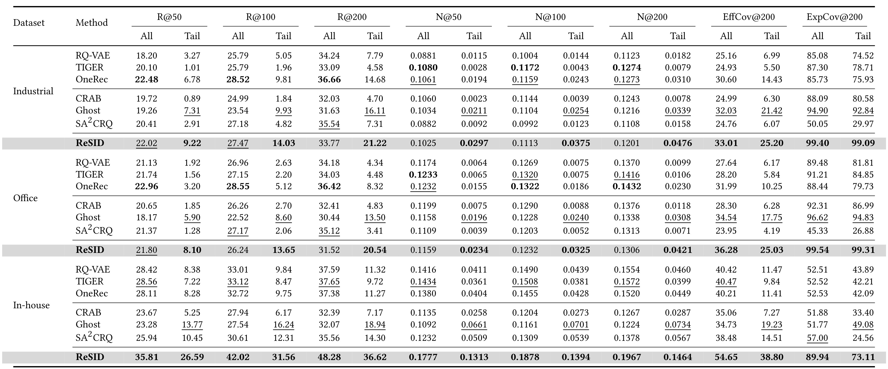
Table 1 每个数据集都横向分成总体请求与长尾目标请求，列包括三个截断位置的召回和排序质量，以及二百截断下的有效覆盖与曝光覆盖。ReSID 在主表所有长尾列领先，Industrial 长尾召回二百为百分之二十一点二二，相比 Ghost 的百分之十六点一一增加五点一一个百分点；Office 为百分之二十点五四，相比百分之十三点五零增加七点零四个百分点。内部数据的长尾召回从 Ghost 的百分之十八点九四升到百分之三十六点六二，排序指标也从零点零七三四升到零点一四六四。与此同时，公开数据总体指标没有全面领先：Industrial 总体召回二百为百分之三十三点七七，低于 OneRec 的百分之三十六点六六；Office 为百分之三十一点五二，低于百分之三十六点四二，整体排序质量也存在退让。内部总体召回则达到百分之四十八点二八，高于最好基线百分之三十七点六五。该表证明的是本文实现中的长尾收益与数据集相关的总体权衡，不能把摘要中的“整体有竞争力”转写成所有指标无损。所有方法共享轻量编码解码推荐骨干，引用的 OneRec、TIGER 是在此骨干下实现其编码机制，并不等于对外部工业原系统的直接复现排名。
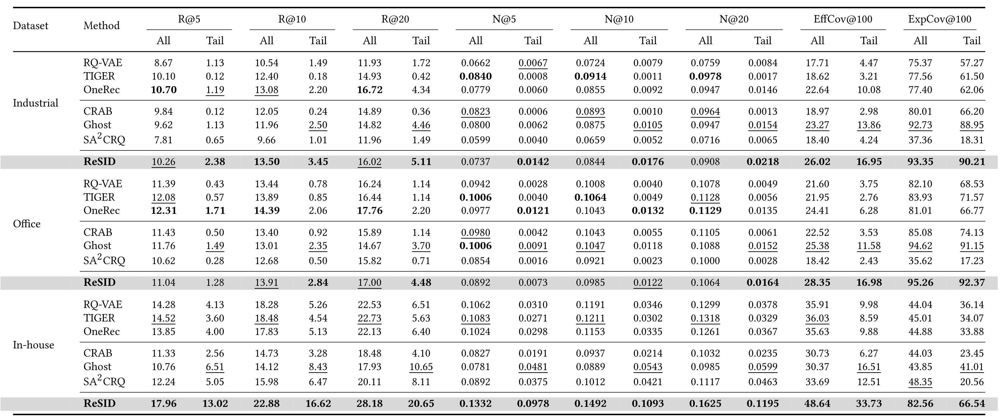
Table 3 将关注点从召回二百前移到五、十、二十，检验深位置收益能否进入更靠前结果。表格同样保留总体与长尾分列，最后的覆盖指标改为一百截断，不能与主表的二百覆盖直接相减。内部数据 ReSID 在各列均最好，长尾召回五达到百分之十三点零二，表明收益不只来自长列表末端；但公开 Office 中，OneRec 的长尾召回五是百分之一点七一，仍高于 ReSID 的百分之一点二八，长尾排序五与十也有领先，ReSID 在召回十、二十和排序二十才体现优势。Industrial 总体五与二十也不是 ReSID 最好，因此“长尾所有指标最好”的主文表述有明确表格范围，只能用于主表选定的五十以上截断。这一附录对边界很重要：若业务只消费极少量召回候选，不能直接照搬二百截断下的优势；若后续排序器消费较大候选池，则可重点关注局部恢复增加的有效长尾覆盖，继续验证最终被排序器保留下来的比例。
3.2 消融与分支级分析说明收益来自哪里
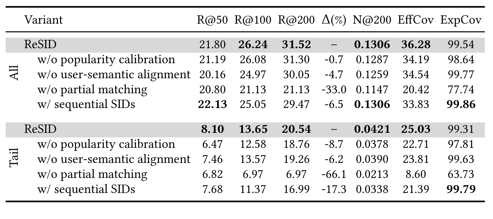
Table 2 在 Office 上分总体与长尾报告删除组件后的结果，其中变化百分比相对完整 ReSID 计算，不能误读成百分点。取消局部匹配后长尾召回二百从百分之二十点五四降到百分之六点九七，相对下降百分之六十六点一，总体从百分之三十一点五二降到百分之二十一点一三；这说明完整精确匹配确实扔掉了主要的局部可恢复信号。删除热门校准和用户语义引导，长尾分别降到百分之十八点七六和百分之十九点二六，贡献幅度较小但方向一致。改回同长度串行编码后长尾为百分之十六点九九，说明离线位置结构也有作用。曝光覆盖不能单看是否更高：取消用户语义引导的长尾曝光覆盖百分之九十九点六三，反而略高于完整系统，但召回和有效覆盖更差，表明“让更多物品出现”不等于“把正确物品给对用户”。消融复用完整模型权重，串行变体使用对应编码训练的推荐器并按相同八轮协议适配语义投影；这有助于限制训练变化，仍不等于独立多种子重训后的稳定因果效应估计。
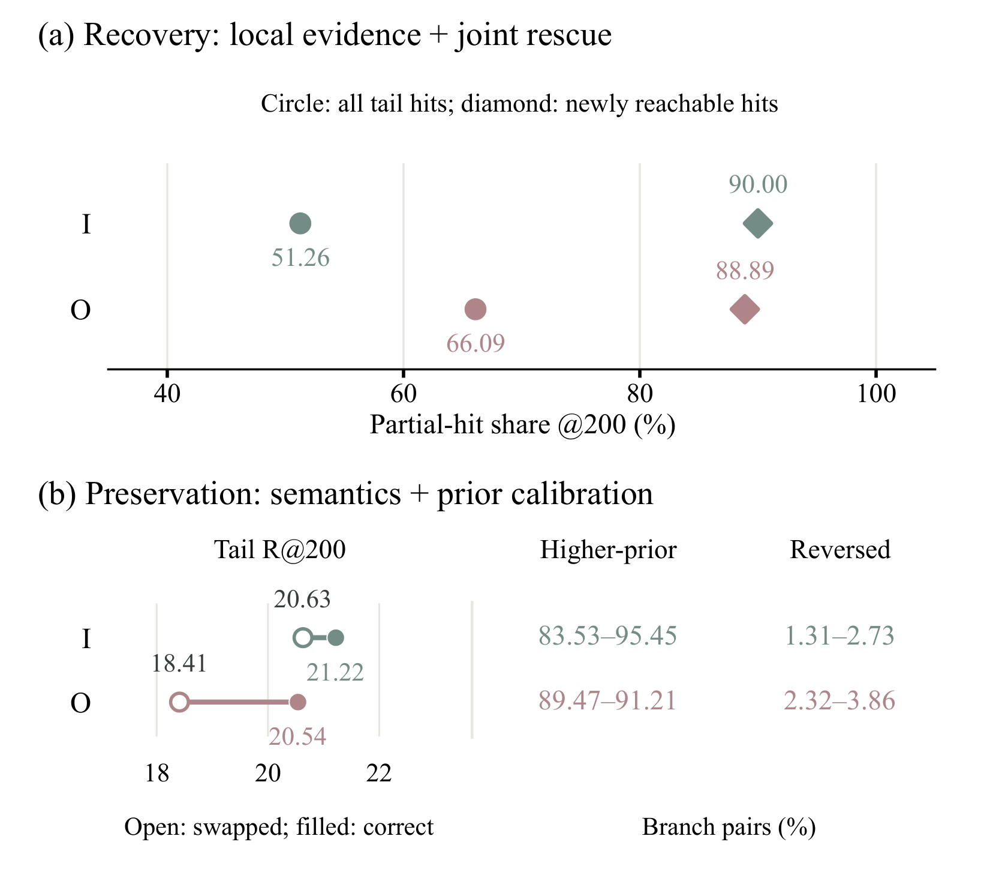
Figure 6 左上用圆点给出所有长尾命中中局部匹配独有命中的份额，Industrial 是百分之五十一点二六、Office 为百分之六十六点零九；它们是已命中样本内部的组成比例，不是全体长尾请求的召回率。菱形进一步只看标准搜索容错不可达而被完整系统救回的小集合，其中 Industrial 十个救回样本有九个仍依赖局部匹配，Office 九个有八个，说明保住邻域与末端恢复确实互补，但样本量很小，不能扩大成一般性百分之九十收益归因。右侧把真实用户向量换成别人的向量，固定热门校准后，Office 长尾召回二百从百分之十八点四一回升到真实语义下的百分之二十点五四，而曝光覆盖都在百分之九十九左右，支持语义引导改善用户匹配而非只增加多样性。分支对比显示，被保留的无关竞争者大多先验更高，单步校准仅让少量被丢长尾反超；这个局部翻转比例不能解释成最终用户点击提升比例。图中每一组诊断都有各自的条件分母，分开读取才能避免把相关机制叠加成不存在的统一贡献度。
3.3 参数、推理成本与线上证据
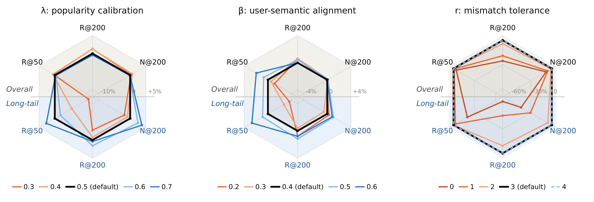
Figure 7 的三个雷达图分别变化热门校准权重、用户语义权重和错配容忍度，每一根辐条都相对默认配置归一化，上半圈为总体指标，下半圈为长尾指标，因此不同辐条的半径不能当成同一绝对数值比较。默认值依次为零点五、零点四、三。容忍度影响最大，Office 验证集长尾召回二百从不容错时的百分之七点二八升到允许两个错配的百分之十八点四五，三个错配为百分之二十点三五，继续到四基本饱和。这个数字来自验证集，与主表测试集百分之二十点五四不同，不应强行统一。增加热门校准在一定区间改善长尾排序与有效覆盖，同时总体召回略有波动，说明仍有分布权衡。作者据同一组超参数跨数据集使用和局部敏感度较平缓判断不依赖精细调参，但这里只是有限范围、单种子验证集扫描，没有证明任意大目录、任意热度分布都稳定；工业迁移还需要关注倒排候选膨胀、尾部碰撞与搜索路径变化。
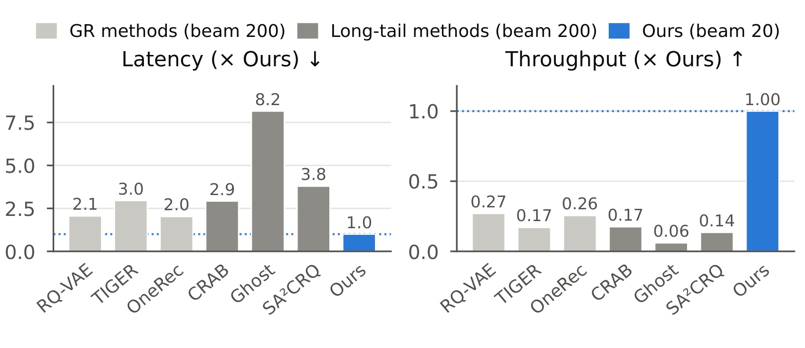
Figure 8 把 ReSID 的延迟与吞吐分别归一为一，其他方法延迟约为其二至八点二倍、吞吐为其零点零六至零点二七倍，两个面板方向相反，不能把延迟倍数直接当成吞吐倍数。作者测量覆盖历史编码、生成、引导、匹配与排序，每种方法都返回二百个不同物品。重要的是搜索预算不同：公开数据 ReSID 使用二十宽 beam，基线使用二百宽；测量在 Apple M4 CPU、单精度、相同线程设置上完成，每个数据集同一组六十四个请求重复三轮。图中成本因此支持一套小 beam 系统在此质量目标下更便宜，不能证明相同 beam 下新增操作本身更快，也不能直接外推为 GPU 端等比例加速。内部离线协议换成 L20、低精度、批量五百一十二、历史一百二十八，ReSID beam 一百而基线三百，完整批次平均六十三点七五毫秒。线上十点三毫秒则是另一套 C++ 与 CUDA 引擎的单请求服务均值，二者不能用除法得到线上吞吐，也不能据此保证尾延迟满足某个服务目标。
线上结果来自作者在电商广告平台进行的用户随机实验，时间为二〇二六年七月一日至十二日，两组各分配百分之十五随机流量。对照采用 TIGER 风格生成召回，实验组替换为完整 ReSID，其他召回通道和下游排序保持不变。作者报告广告收入相对提升百分之一点三、点击率百分之一点一、成交总额百分之零点八、长尾曝光份额百分之四点零，并称双侧检验均小于零点零五。长尾曝光份额仍需区分相对变化与百分点，论文使用提升百分数，本笔记不改写成增加四个百分点。实验给出随机单位、窗口、流量和检验方向，比只给业务增长数字更完整；仍未提供置信区间、逐日走势、指标方差或长期留存效果，且收益来自整套编码与召回替换，无法单独归给局部匹配。作者声称自七月起覆盖主要生产流量属于论文披露，本次未访问该平台内部配置或实际线上请求，因此不是独立部署验收。
4. 总结
4.1 对生成式召回接口的判断
ReSID 最值得保留的是“离散表示的局部证据具有使用价值，但只有搜索先让它活下来，匹配才有恢复机会”。它将编码结构、搜索先验和物品映射放进同一条证据链，避免把表示学习的离线提升直接当成最终可召回性的保证。对已有 SID 系统，先检查目标何时离开精确路径，再检查容错邻域何时被清空，会比只比较训练交叉熵更接近线上失败的位置。并行量化、热门校准和局部匹配并非单独都全新，本文较完整的价值在于用同一长尾问题把它们连接，并提供不同层次的诊断与工业结果。公开整体指标退让也必须保留：更广长尾有效覆盖与头部精准度之间有真实成本，是否值得取决于业务目标和后续排序器的候选消化能力。
4.2 局限与复现优先级
第一，公开数据目录只有数千个物品，长码小字典组合在这种规模下的局部碰撞和大工业库不同。虽然内部数据扩大到四百多万物品，但未公开内部原始交互，外部读者不能用公开复现证明内部收益。第二，主要离线实验只报告随机种子四十二，没有多种子方差；一些用户语义置换增益不大，应在更多切分和用户群体上确认。第三，热门校准、语义投影和局部恢复一起替换对照，线上效果不能拆成各组件独立贡献，尤其不能把局部命中份额当作收入归因。第四，公开整体召回和早截断排名存在负例，若业务只关心最前几个候选，必须重新权衡。第五，参数共享不等于无调优，容忍度增加时的候选索引访问量和召回噪声，可能在热门事件或目录快速变动时突然增大。第六，报告平均延迟无法判断高分位尾延迟、内存占用、并发退化与更新索引开销；本文没有给出足以完整容量规划的服务成本分解。
复现首先应在原有编码不变的条件下记录逐步路径失效与容错失效，核对合法物品补全逻辑，确认本系统确实存在作者描述的瓶颈，再决定是否更换量化结构。其次应把同 beam、同候选输出数与同端到端预算三个比较分别做清楚，记录编码器、搜索、倒排匹配和排序耗时，防止把 beam 缩小的收益当作每个新增操作都零成本。最后应固定下游排序器和目标长尾定义，分别观察候选有效覆盖、最终曝光、点击质量及长期反馈，确认恢复出的长尾不是只增加无效候选。这三项跟进都应保留用户粒度和流量分母，并检查热门与长尾的收益分布。若新方法只提高曝光覆盖，却不能提高正确召回或下游价值，应回到语义引导与错配桶排序，而不是继续放宽容忍度。实际复现还应保存每条路径对应的候选来源，区分精确命中、纯局部命中和重复路径覆盖；当一个物品被多条beam召回时，应先按明确规则合并，再比较返回列表。否则去重次序改变就可能制造覆盖收益。目录新增或下架后，前缀质心、合法补全约束与倒排列表也必须同步刷新，陈旧索引会让理论可达性与实际返回不一致。官方仓库目前可获取公开准备数据、冻结权重与数值参照，是开始检查机制的入口；它不替代对生产目录更新、新用户和新增物品处理的独立验证。